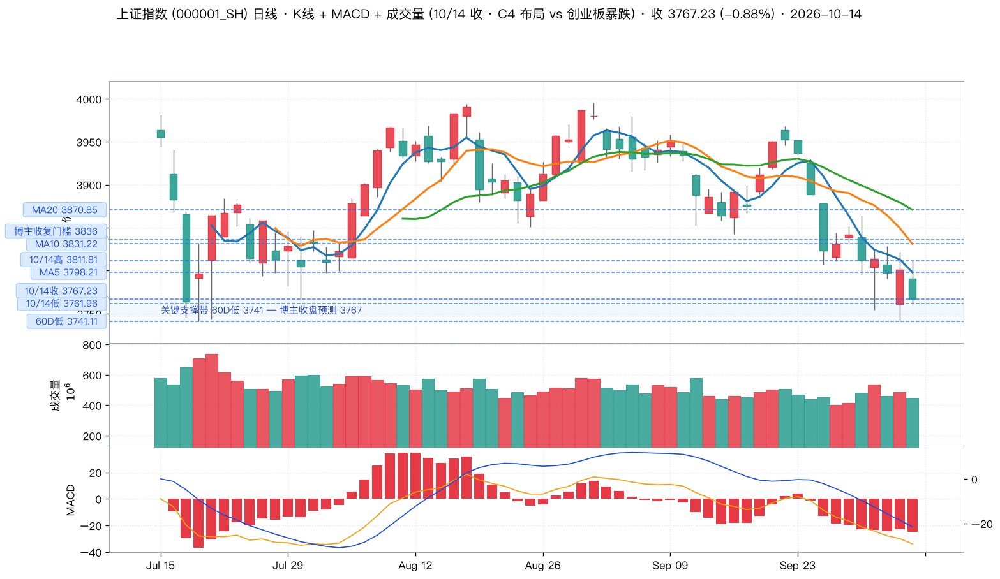
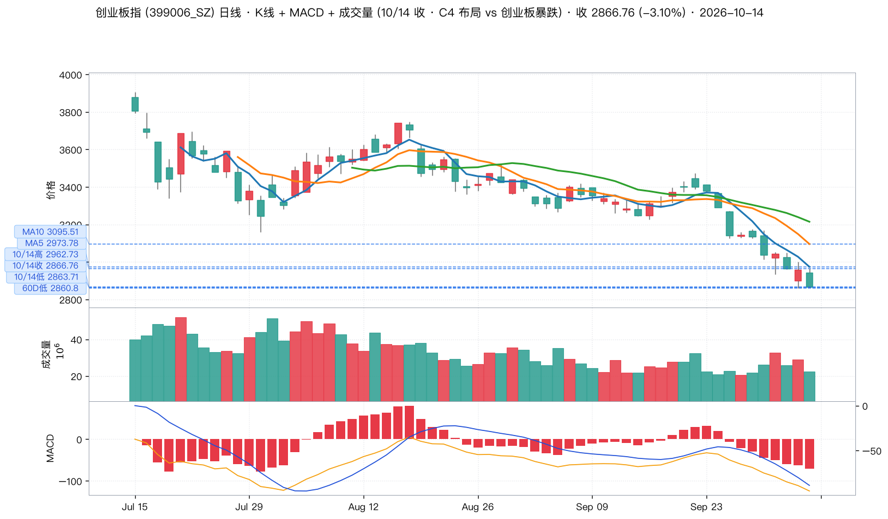
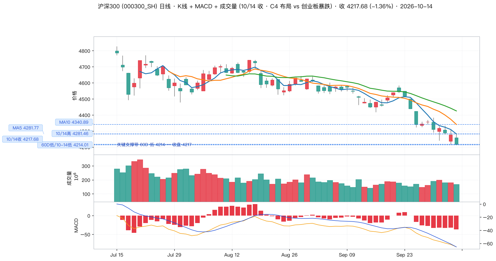
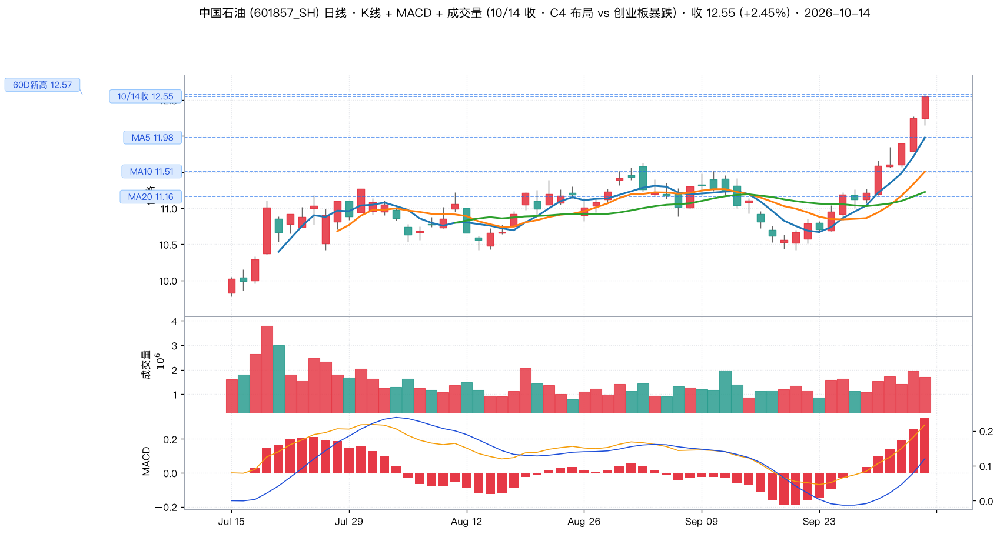
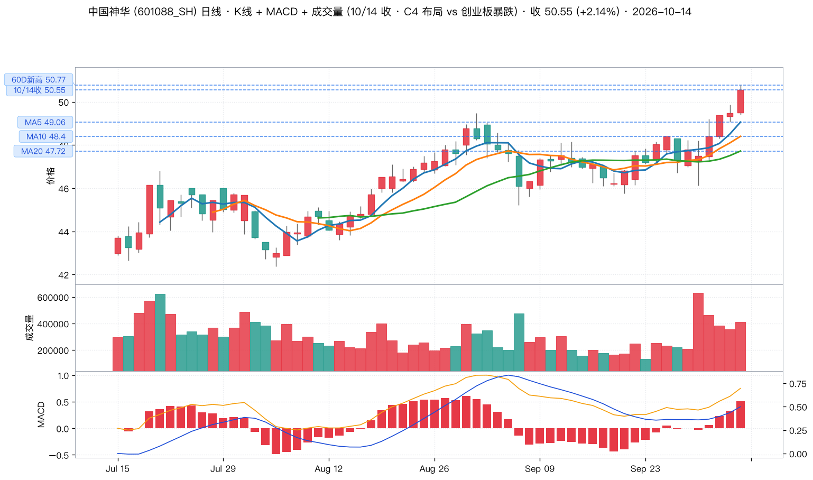
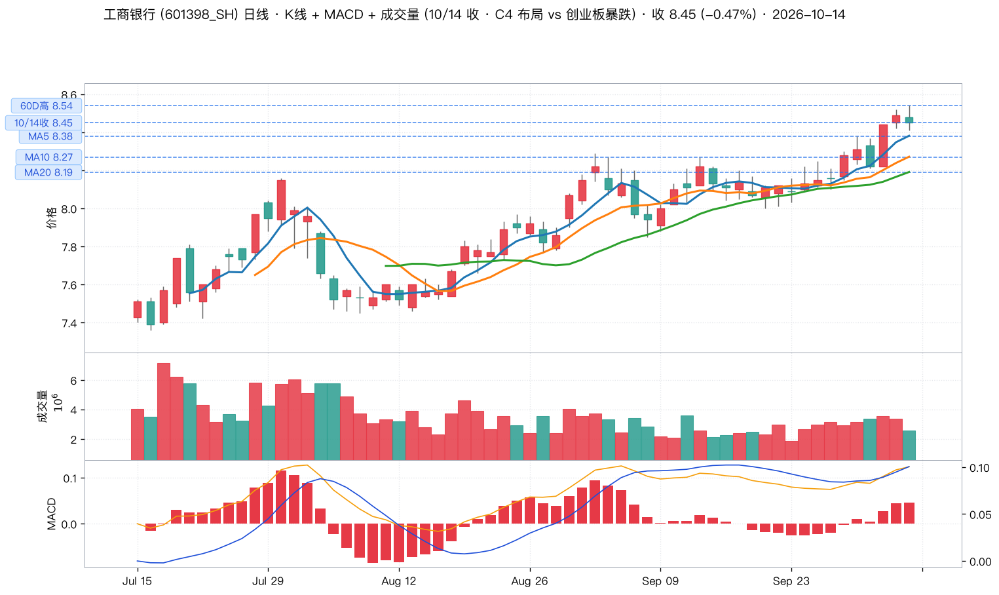
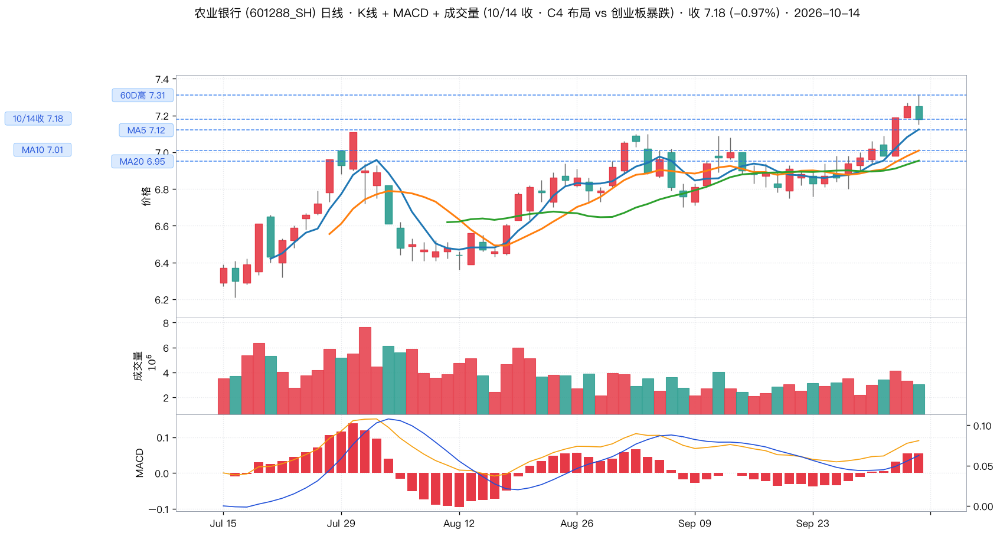
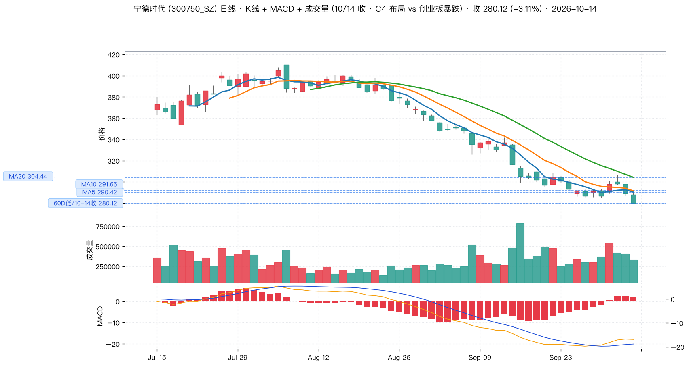
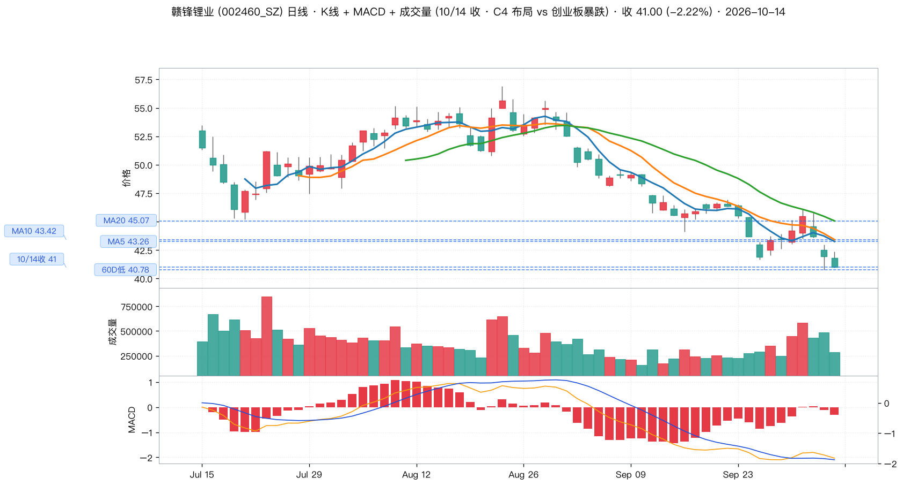

📈 wu2198 投资观点日报 · 2026-10-14（周三）
🕐 抓取时间 2026-10-14 21:00
👤 wu2198（UID 1216826604 · 47.3w 粉丝）
📊 数据源 weibo-watcher skill + Tushare Pro
📈 行情 10/14 收盘
🟢
博主全天四次强化 C4 反弹，14:51 措辞由「耐心等待」升级为「布局 C4」——但 C4 反弹当天即告失败，创业板暴跌 3.10%。
⚠️ 今日核心矛盾：点位分毫不差，方向却判反了
博主 09:36 预判「今天早上 3756 点左右等待反击」，15:06 预判「收 3767 点」——两个点位与实际行情几乎完全吻合（实际低 3761.96、收 3767.23）。
但当天走势是 高开冲高 3811.81 后一路回落，收盘 3767.23 恰好落在日内最低点附近。沪指 -0.88%、沪深300 -1.36%、创业板 -3.10%。
最值得警惕的一点：博主 10/13 自己定的硬门槛是「按力度看要收复 3836 点才算有力度」。10/14 最高仅 3811.81，门槛连续第二个交易日未满足——但他在 14:51 却直接喊出「布局 C4」。博主自己设定的验证条件没通过，就跳过了门槛，这是今日最大的操作风险。
📊 核心指标一览
上证指数
3767.23
-0.88% · 高 3811.81 / 低 3761.96
创业板指
2866.76
-3.10% · 距 60D 低仅 +0.21%
沪深 300
4217.68
-1.36% · 距 60D 低仅 +0.09%
博主点位准确率
2 / 2
3756 低点 / 3767 收盘 全中
博主方向准确率
0 / 3
沪指 / 创业板 / 沪深300 全线下跌
今日最强主线
两桶油 +2.3%
中石油 / 神华 双双盘中创 60D 新高
🧠 博主观点提炼（10/14 全部 8 条）
| 时间 | 方向 | 原文 / 摘要 | 点赞 | 类型 |
|---|
| 15:06 |
🟢 |
「收3767点，今天不用评论……啵一个！」
当日互动最高（👍12636 💬934 🔁19）。收盘点位预测，实际 3767.23，分毫不差。 |
12636 |
大盘判断收盘总结 |
| 14:51 |
🟢 |
「布局C4」
措辞由 10:56 的「耐心等待」直接升级为「布局」，是当日最激进的一句。但此时距收盘仅 9 分钟，沪指已在当日低位区。 |
10696 |
操作建议 |
| 13:38 |
🟡 |
「等待结果！」
午后横盘时的犹豫表述，与 14:51 的「布局」形成鲜明对比。 |
12807 |
行情速报 |
| 13:03 |
🟡 |
「反复折腾！」
精准描述了当日 3741—3811 区间的宽幅震荡。 |
9977 |
行情速报 |
| 10:56 |
🟢 |
「耐心等待C4反抽！」 |
15003 |
操作建议 |
| 09:58 |
🟢 |
「按短线技术结构看，市场在构筑C4反弹。收到请回复666或点赞支持一下！」
当日最高赞（👍19883）。C4 表述的第 4 次强化，与 10/13 的「正在组织」相比语气更确定。 |
19883 |
大盘判断 |
| 09:36 |
🟢 |
「今天早上3756点左右等侍反击……收到请回复888」
当日唯一明确的盘中点位预判。实际全天最低 3761.96，偏差 5.96 点（0.16%）。 |
17246 |
技术位 |
| 09:19 |
⚪ |
「铁几？」
粉丝互动用语，无操盘信息。 |
14313 |
无关 |
📌 信号统计
共 8 条 → 操盘/行情类 6 条（大盘判断 2 · 操作建议 2 · 技术位 1 · 行情速报 1），无关 2 条。
方向分布：🟢 偏多 4 条 · 🟡 中性 2 条 · ⚪ 无关 2 条 —— 较 10/13（多 5 / 空 2）进一步转多，措辞强度也从「组织」升级到「布局」。
✅ 博主预判验证
| 标的 | 博主预判 | 实际（10/14） | 偏差 | 结论 |
|---|
| 上证指数 早盘低点 | 3756（09:36） | 3761.96 | +5.96（0.16%） | ✓ 命中 |
| 上证指数 收盘 | 3767（15:06） | 3767.23 | +0.23（0.01%） | ✓ 命中 |
| 上证指数 收复门槛 | 收复 3836 才算有力度 | 最高 3811.81 | 差 24.19 点 | ✗ 未达 |
| C4 反弹方向 | 市场在构筑 C4 反弹 | 沪指 -0.88% | 方向相反 | ✗ 判反 |
| 创业板指 | C4 反弹（同步） | 2866.76（-3.10%） | 暴跌 | ✗ 判反 |
💡 一句话总结：博主是「点位精算师，方向乐观派」。他对盘中具体点位的把握极准（连续两日 8 个点位全部命中），但对方向的判断连续两日偏乐观。跟随时应只取点位、不取方向。
📈 大盘技术面（K线 + MACD + 成交量 · 关键位居左虚线标注）
1. 上证指数 收 3767.23 (-0.88%)

关键位：3741.11 60D低 / 3761.96 10/14低 / 3767.23 10/14收（博主预判 3767）/ 3798.21 MA5 / 3811.81 10/14高 / 3831.22 MA10 / 3836 博主收复门槛 / 3870.85 MA20
- 全天走出「冲高回落」：最高 3811.81 → 收 3767.23，从日高回落 44.58 点（-1.17%），收盘几乎贴近日低 3761.96。K 线为光头光脚的中大阴线。
- 收盘 3767.23 跌破 MA5（3798.21），MA5/MA10/MA20（3870.85）全部空头排列，且 60D 低 3741.11 仅在下方 0.70%。
- MACD 绿柱再度放大（DIF -34.75 / DEA -22.79 / 柱 -23.91），零轴下方且死叉后继续走扩，无任何企稳信号。
- 量比 0.94，缩量下跌——不是恐慌抛售，但也说明承接盘缺席，反弹缺乏资金基础。
- 距 60D 高 3995.18 仍有 -5.70% 空间。
2. 创业板指 收 2866.76 (-3.10%) —— 今日真正的破位方

关键位：2860.80 60D低 / 2863.71 10/14低 / 2866.76 10/14收 / 2962.73 10/14高 / 2973.78 MA5 / 3095.51 MA10
- 收盘 2866.76，距 60D 低 2860.80 仅剩 0.21%，日内最低 2863.71 已经贴到 60D 低上沿 —— 创业板是三大指数中最接近有效破位的一个。
- 单日 -3.10% 的跌幅远超沪指（-0.88%），成长股被单边抛弃，与博主「C4 反弹」的判断完全相反。
- MACD 绿柱大幅走扩（DIF -126.14 / DEA -91.76 / 柱 -68.75），零轴下方深度负值，是三大指数中最弱的。
- 失守 MA5（2973.78）后已无任何短期均线支撑，距 60D 高 3905.31 有 -26.58%。
3. 沪深 300 收 4217.68 (-1.36%) —— 权重护盘结构瓦解

关键位：4214.01 60D低/10-14低 / 4217.68 10/14收 / 4281.46 10/14高 / 4281.77 MA5 / 4340.89 MA10
- 收盘 4217.68，距 60D 低 4214.01 仅 0.09%—— 今日最低 4214.01 已经精准触及 60 日新低，收在它上方不到 4 个点。
- 这是今日最重要的结构性信号：权重股（四大行 + 两桶油）之外，沪深300 的其他成分已开始补跌，说明「提肩带」护盘结构已经撑不住指数。
- 博主 10/12 设计的「四大行 + 两桶油提肩带」需要权重走强来托住指数；今天四大行冲高回落收绿，沪深300 直接探到 60D 低 —— 提肩带失效。
- MACD 绿柱走扩（DIF -84.27 / 柱 -36.02），零轴下方，无背离信号。
🏆 最值得关注的 3 大板块
板块 1 · 🟢 石油 / 能源（两桶油）—— 唯一逆势创新高主线
| 个股 | 收盘 | 涨跌 | 量比 | 60D 高 | MACD |
|---|
| 中国石油 601857 | 12.55 | +2.45% | 1.11 | 12.57（今日刷新） | 红柱 · 零轴上 |
| 中国神华 601088 | 50.55 | +2.14% | 1.01 | 50.77（今日刷新） | 红柱 · 零轴上 |
推荐逻辑：博主 10/12 提出的「四大行、两桶油等继续提肩带」在能源端连续第 3 个交易日兑现。今天大盘 -0.88%、创业板 -3.10% 的普跌中，两桶油是全场仅有的两个收创新高的品种，且量比 1.11 为放量上涨（区别于银行的缩量冲高回落）。
操作建议：趋势最完整，但已连涨两日，中石油距 60D 高 12.57 只剩 0.16%，不追高。回抽 MA5（11.98）再介入，跌破 MA20（11.16）离场。
板块 2 · 🟡 银行 / 四大行 —— 连续两日高位派发，提肩带角色弱化
| 个股 | 收盘 | 涨跌 | 量比 | 60D 高 | 状态 |
|---|
| 工商银行 601398 | 8.45 | -0.47% | 0.79 | 8.54（今日盘中触及） | 缩量冲高回落 |
| 农业银行 601288 | 7.18 | -0.97% | 0.95 | 7.31（今日盘中触及） | 放量不足 |
逻辑：两只银行连续第 2 个交易日盘中触及 60 日新高后收绿（工行盘中 8.54 / 农行盘中 7.31），且工行量比仅 0.79 —— 高位派发的特征非常明确。10/12 它们是全场最强（全线收在 60D 高），10/14 已成为拖累项。
操作建议：守住 MA5（工行 8.38 / 农行 7.12）尚可持有，但不新增仓位。跌破 MA20（8.19 / 6.95）意味着「提肩带」彻底失效，需减仓。
板块 3 · 🔴 固态电池 / 锂电 —— 破位确认，明确回避
| 个股 | 收盘 | 涨跌 | 量比 | 60D 低 | 状态 |
|---|
| 宁德时代 300750 | 280.12 | -3.11% | 0.82 | 280.12（今日收盘即 60D 低） | 完全破位 |
| 赣锋锂业 002460 | 41.00 | -2.22% | 0.65 | 40.78（距 0.54%） | 逼近 60D 低 |
风险逻辑：博主从 10/8 起三次确认固态电池是活跃板块，但本人始终观望，并明确表态「我从来没有购买电车的想法」「起码等固态电池技术成熟之后吧」。今天的技术面给出了最彻底的答案：宁德时代收在 280.12，恰好等于当日最低价，也等于 60 日新低 —— 一根光头阴线直接砸穿前低。赣锋锂业距 60D 低 40.78 只剩 0.54%，且量比 0.65 缩量阴跌，说明无人接盘。
操作建议：不参与。博主的观望态度连续多日被验证是正确判断。宁德跌破 285 前低区后已无技术支撑，不存在「超跌反弹」依据。
📦 6 支个股详解
🟢 1. 中国石油 601857.SH · 石油 · 收 12.55 (+2.45%) · 今日最强

中国石油 601857.SH 日线 · K线 + MACD + 成交量 · 60 日窗口 · 关键位居左虚线标注
全场唯一放量创新高的品种（量比 1.11，盘中最高 12.57 直接刷新 60 日新高）。MACD 红柱在零轴上方运行，DIF 0.35 / DEA 0.19，均线 MA5（11.98）/MA10（11.51）/MA20（11.16）完整多头排列。从 6 月 8.7 一路涨到 12.55，60 日涨幅超 44%，是本轮调整中唯一的趋势主线。今日在大盘 -0.88% 时逆势 +2.45%，相对强度突出。
支撑 11.98(MA5) · 11.51(MA10) · 11.16(MA20) ｜ 阻力 12.57(60D新高) ｜ 策略：不追高，回抽 11.98 关注，跌破 11.16 离场
🟢 2. 中国神华 601088.SH · 煤炭 · 收 50.55 (+2.14%)

中国神华 601088.SH 日线 · K线 + MACD + 成交量 · 60 日窗口 · 关键位居左虚线标注
盘中最高 50.77，同步刷新 60 日新高，收 50.55 几乎收在最高位，是今日 6 支个股中收盘强度最高的一只（收盘价 = 日内次高）。MACD 红柱零轴上方（DIF 0.77 / DEA 0.53），均线 MA5（49.06）/MA10（48.40）/MA20（47.72）多头排列完好。相比中石油已连涨两日，神华今日是首次放量启动，补涨空间相对更足。
支撑 49.06(MA5) · 48.40(MA10) · 47.72(MA20) ｜ 阻力 50.77(60D新高) ｜ 策略：关注放量突破 50.77，跌破 47.72 离场
🟡 3. 工商银行 601398.SH · 银行 · 收 8.45 (-0.47%)

工商银行 601398.SH 日线 · K线 + MACD + 成交量 · 60 日窗口 · 关键位居左虚线标注
盘中最高 8.54 触及 60 日新高后回落 0.09 元收绿，连续第 2 日高位派发。量比 0.79 是 6 支个股中最低之一，说明冲高没有资金承接。MACD 仍在零轴上方红柱（DIF 0.13 / DEA 0.10），均线全部站上（MA5 8.38 / MA10 8.27 / MA20 8.19），技术结构尚未破坏 —— 属于「高位震荡」而非「破位」，但已不具备新增配置价值。
支撑 8.38(MA5) · 8.27(MA10) · 8.19(MA20) ｜ 阻力 8.54(60D高) ｜ 策略：持有不加仓，跌破 8.19 减仓
🟡 4. 农业银行 601288.SH · 银行 · 收 7.18 (-0.97%)

农业银行 601288.SH 日线 · K线 + MACD + 成交量 · 60 日窗口 · 关键位居左虚线标注
同样冲高回落：盘中最高 7.31 触及 60 日新高后收 7.18，跌幅（-0.97%）大于工行，弹性品种回吐更多。量比 0.95 接近平量，说明昨日的放量已停止。MACD 红柱零轴上（DIF 0.09 / DEA 0.06），趋势仍在但动能明显弱化。四大行中本轮涨幅最大的品种，也是获利盘压力最大的品种。
支撑 7.12(MA5) · 7.01(MA10) · 6.95(MA20) ｜ 阻力 7.31(60D高) ｜ 策略：持有不加仓，跌破 6.95 减仓
🔴 5. 宁德时代 300750.SZ · 固态电池 · 收 280.12 (-3.11%) · 完全破位

宁德时代 300750.SZ 日线 · K线 + MACD + 成交量 · 60 日窗口 · 关键位居左虚线标注
收盘价 = 当日最低价 = 60 日新低 280.12，一根光头阴线直接砸穿前低，没有任何下影线护盘。距 MA5（290.42）已远，MA20（304.44）/MA60（354.79）层层压制在上方。虽然 MACD 柱转正（+1.85）但 DIF（-17.95）仍在零轴下方，属于下跌中继的技术性红柱，不构成买入理由。博主从 10/10 起三次表态不碰电车，今日完全验证。
阻力 290.42(MA5) · 304.44(MA20) ｜ 支撑：已无有效支撑，60D 低 280.12 为心理关口 ｜ 策略：不参与
🔴 6. 赣锋锂业 002460.SZ · 固态电池 · 收 41.00 (-2.22%)

赣锋锂业 002460.SZ 日线 · K线 + MACD + 成交量 · 60 日窗口 · 关键位居左虚线标注
距 60 日新低 40.78 仅剩 0.54%，盘中最低 40.96 几乎贴到前低。量比 0.65 是全场最低，缩量阴跌 = 无人接盘，典型的主力出货末期形态。MACD 绿柱零轴下方（DIF -2.15 / DEA -2.05 / 柱 -0.20）。距 60D 高 56.89 已跌去 -27.9%。博主持「永不买电车」立场，从 10/8 板块活跃至今该股已累计大跌，规避正确。
阻力 43.26(MA5) · 43.42(MA10) ｜ 支撑 40.78(60D低) ｜ 策略：不参与，跌破 40.78 打开下行空间
🎯 今日操作建议汇总
- 不要跟随博主 14:51 的「布局 C4」。他自己在 10/13 设定的「收复 3836 才算有力度」门槛连续两日未满足，创业板 -3.10% 说明反弹的同步性前提已经消失。C4 至少需要等创业板止跌在先。
- 盯三个数字：创业板 2860.80、沪深300 4214.01、宁德 280.12 —— 任何一个有效跌破，都意味着打开新一轮下行空间。
- 唯一可跟的是能源线，但不要追高。中石油 / 神华是全场仅有的创新高品种，趋势完好；等回抽 MA5（11.98 / 49.06）再考虑，跌破 MA20 止损。
- 银行不加仓。连续两日冲高回落 + 沪深300 已探 60D 低，说明「提肩带」正在瓦解。守 MA5 可持有，破 MA20 减仓。
- 固态电池继续回避。宁德收在 60D 低是本轮最明确的破位信号，博主的观望态度是对的。